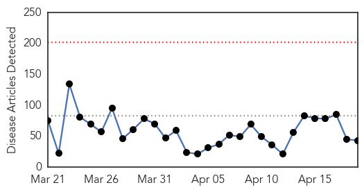
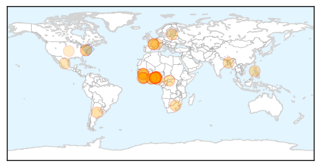
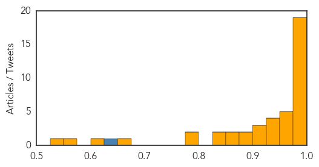

Mold/Fungal
30-Day Web Trend
1 alerts, 0 warnings
30-Day Twitter Trend
0 alerts, 0 warnings

Article Locations

Article Confidences

Top Articles:
-
No articles found for Apr 19, 2015
Top Tweets:
-
No tweets found for Apr 19, 2015
Ebola
30-Day Web Trend
0 alerts, 0 warnings

30-Day Twitter Trend
0 alerts, 0 warnings
Article Locations
Article Confidences
Top Articles:
- 1.000
- Govt bans dead bodies from Ebola hit spots
- 1.000
- Deadly virus: Ebola remains threat to Ghana
- 1.000
- Ebola virus found in survivor’s semen six months after negative blood test
- 0.999
- Nigeria officially Ebola free – WHO
- 0.999
- Nigeria expected to be declared Ebola-free
- 0.999
- WHO official says Ebola remains threat to Ghana
- 0.998
- Ondo strange disease not contagious, initial results show ethanol poisoning
- 0.997
- Health body warns on sexual contact with Ebola survivors
- 0.996
- Http://abcnewsradioonline.com/world-news/usaid-pledges-126-million-to-help-rebuild-west-african-healt.html
- 0.995
- 'Mystery' disease which kills within 24 hours leaves 17 dead in Nigeria
- 0.988
- Mystery (?) disease claims 18 lives in southeast Nigeria
- 0.987
- Post-Ebola Recovery Under Way, West African Nations Say
- 0.985
- Lagos 'Ebola hospital' battles to recover
- 0.985
- Article not found
- 0.985
- Article not found
- 0.984
- Liberian Ebola workers' hazard pay protest
- 0.981
- Nigeria OndoX mystery next hypothesis is herbicides: WHO
- 0.979
- WHO blames poisoning for suspicious deaths in Nigeria
- 0.978
- Pesticides likely behind ′mysterious killer disease′ in Nigeria
- 0.969
- Our monitoring team remains on alert, says Ogun govt, Articles
- 0.964
- 'Mysterious' disease kills 17 in Nigeria - official
- 0.964
- Rebuilding After Ebola
- 0.957
- Mysterious disease kills patients within 24 hours claimed at least 17 lives in Nigeria
- 0.950
- Mysterious Disease Kills 18 Nigerian Patients Within a Day
- 0.941
- official, news, Health News, AsiaOne YourHealth
- 0.932
- Battling Ebola: How Tours into Guinea’s Hot Zone are Helping in the Fight
- 0.931
- Mystery disease kills 18 people in 24 hours in Nigerian town Ode-Irele
- 0.930
- ‘Mysterious’ disease kills 18 in Nigeria — official
- 0.924
- 'Mystery disease' kills 18 in Nigeria
- 0.918
- ‘Mysterious’ disease kills 18 in Nigeria: official
- 0.902
- Pesticide The Likely Cause Of Mysterious Disease In Ondo
- 0.896
- Ebola: World Health Organization admits failings in tackling crisis
- 0.894
- 'Mysterious' disease kills 18 in Nigeria: official
- 0.875
- Ondo strange killer disease "confounding"
- 0.859
- Help Ebola-Stricken Countries Rebuild and Recover
- 0.839
- Weedkiller likely cause of Nigeria 'mystery disease' – WHO
- 0.833
- Nigeria: Deadly unknown outbreak alert
- 0.795
- Sahara Reporters
- 0.785
- No new case in 72 hrs
- 0.672
- Ondo deaths: Youths committed sacrilege, says Chief
- 0.615
- Liberia’s MICAT To Use Audio Equipment from HC3 for Public Health Outreach
- 0.572
- “Continued economic progress in Liberia – a more uneven picture in Sierra Leone”
- 0.543
- Mysterious deaths in Ondo: The god is not to blame
Top Tweets:
- 0.634
- RT: We’ll keep fighting Ebola until health systems are strengthened & future epidemics prevented. GlobalCitizenEarthDay http…